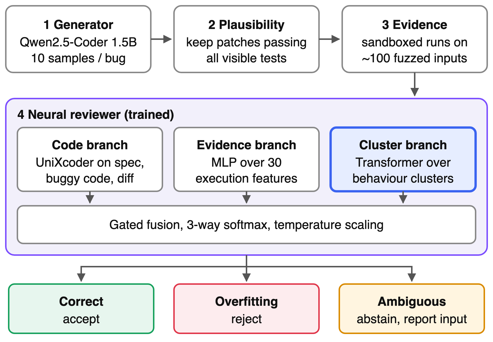

Coding assistants are now everywhere. In the Stack Overflow Developer Survey 2026, 83% of developers said they use at least one AI tool, but only 6.6% trust it with important decisions and 48% trust its output only when they can easily check it [19]. That last number is the one that stuck with me: the real bottleneck is checking. And checking is weakest exactly where AI is being pushed hardest, in automatic bug fixing, where a fix is usually accepted as soon as the failing test passes.
There are two very different ways a fix that passes the tests can still be a problem.
average(numbers), which crashes on []. Returning 0.0, returning None and raising ValueError all make the crash go away, and the docstring does not say which one is wanted. Picking one silently is making a design decision for the developer. This is not rare: human reviewers could not decide on 51 of 77 sampled SWE-bench patches that behaved differently from the developer's fix [12].What makes this hard is that both cases look the same from the outside: the candidate fixes disagree with each other. So the questions I am trying to answer are:
What I am contributing. (1) A three-way way of judging fixes (correct, overfitting, or ambiguous) that needs no reference fix from a developer. (2) Controlled underspecification, a way to build ambiguous bugs on purpose so I know exactly where the specification is silent. (3) A neural reviewer with a branch that looks at groups of candidates that behave the same way. (4) The wording test (Section 5). (5) The whole pipeline as a working package, acrdl, that runs on a laptop.
Before committing to an idea I read the five papers from the ICSE 2026 session "AI for Software Engineering 9", which is what got me interested in this area. Then, on 24 November, I searched specifically for work on patch correctness and on ambiguity, because I wanted to be sure I was not rebuilding something that already exists. Below is what each paper did and how my project is different.
LoopRepair (Ye, Sun, Cao, Bo and Li. Well Begun is Half Done: Location-Aware and Trace-Guided Iterative Automated Vulnerability Repair. ICSE 2026, Distinguished Paper, arXiv:2512.20203). What it did: An LLM vulnerability-repair approach that first predicts where a patch should go, then scores test-failing candidate patches by whether they introduce new vulnerabilities and by taint-statement coverage, to pick the patch to refine in the next iteration. It produced 27 plausible patches on 40 C/C++ vulnerabilities (VulnLoc+). How mine differs: Its patch-quality scores are hand-designed, specific to vulnerabilities and used on failing patches to steer the search. I learn a three-way judge for patches that already pass the tests, including the case where the specification itself is ambiguous.
Rethinking fine-tuned vulnerability repair (Han et al. Rethinking the Capability of Fine-Tuned Language Models for Automated Vulnerability Repair. ICSE 2026, arXiv:2512.22633). What it did: Re-evaluated fine-tuned repair models with semantic-preserving transformations of the test sets and showed that exact-match metrics and overlap between training and test data overstate what the models can do. How mine differs: This is less a competitor than a warning I took seriously: my labels come from running hidden tests rather than matching text, I split the data by problem, and I report a contamination-free subset (freshly mutated MBPP+ bugs) separately.
INTENTFIX (Heo, Choi, Kim, Kim and Lee. INTENTFIX: Automated Logic Vulnerability Repair via LLM-Driven Intent Modeling. ICSE 2026, ICSE 2026 program page). What it did: Uses an LLM to turn the developer's implicit intent into a structured model, compares it with the code to find semantic gaps, then synthesises and refines a patch. It reports 64.5% patch accuracy on 1,107 real CVEs. How mine differs: INTENTFIX assumes the intent can be recovered and builds a fix from it. My project goes the other way: it judges fixes and tries to notice when the specification does not pin the intent down, and in that case it asks instead of choosing.
MGDebugger (Shi, Wang, Wan, Wang and Gu. From Code to Correctness: Closing the Last Mile of Code Generation with Hierarchical Debugging. ICSE 2026, arXiv:2410.01215). What it did: Breaks buggy code into a tree of subfunctions and debugs them bottom-up with LLM-simulated execution. It reports a 97.6% repair success rate on HumanEvalFix. How mine differs: It counts a repair as successful when the tests pass, which is exactly the signal I argue is not enough. The two fit together: a reviewer like mine could sit on top of a strong generator like MGDebugger.
LANTERN (Luo et al. Unlocking LLM Repair Capabilities Through Cross-Language Translation and Multi-Agent Refinement. ICSE 2026, arXiv:2503.22512). What it did: Translates a bug into a programming language in which the LLM repairs better, fixes it there and translates the fix back, choosing the target language with an LLM agent. Evaluated on 5,068 bugs in 11 languages (xCodeEval). How mine differs: It improves how fixes are generated. I work on how fixes are judged, so my reviewer does not care where the candidates came from.
PATCH-SIM (Xiong et al. Identifying Patch Correctness in Test-Based Program Repair. ICSE 2018, arXiv:1706.09120). What it did: Compares execution traces of the buggy and patched programs: passing tests should behave alike and failing tests differently. A hand-written heuristic, evaluated on Java. How mine differs: I use this idea (behaviour preservation) as one of my input features, not as my contribution; I learn from it and add a third class.
ODS (Ye et al. Automated Classification of Overfitting Patches with Statically Extracted Code Features, arXiv:1910.12057). What it did: Classifies patches as correct or overfitting from static features of the code change, without running them. How mine differs: Binary and static only. A static-features classifier is one of my baselines.
APPT (Zhang et al. APPT: Boosting Automated Patch Correctness Prediction via Fine-tuning Pre-trained Models, arXiv:2301.12453). What it did: Fine-tunes a pretrained language model on the code change to predict whether a patch is correct. How mine differs: It looks at the code text only, with no execution evidence and two classes. My code branch is similar in spirit, and my ablations measure what execution evidence adds on top.
Invalidator (Le-Cong et al. Invalidator: Automated Patch Correctness Assessment via Semantic and Syntactic Reasoning, arXiv:2301.01113). What it did: Infers program invariants from the buggy and developer-fixed programs and flags patches that break them, combined with a learned syntactic classifier. How mine differs: It needs the developer's reference fix, which a real reviewer would not have, and it predicts two classes. My system never needs a reference fix.
Crex (Predicting Patch Correctness in Automated Repair of C Programs through Transfer Learning of Execution Semantics. Information and Software Technology, ScienceDirect). What it did: Learns embeddings of execution micro-traces with transfer learning and classifies C patches. How mine differs: Learned execution semantics, but binary labels and no notion of an ambiguous specification.
Prism (A Semantic-Based Approach to Overfitting Patch Detection. OOPSLA 2025, paper PDF). What it did: Trains a classifier on 66 semantic features from a differential static analysis of the buggy and patched code. How mine differs: Static and binary. I combine static smells with execution and cluster evidence and predict three classes.
RePaCA (RePaCA: Leveraging Reasoning Large Language Models for Static Automated Patch Correctness Assessment. 2025, arXiv:2507.22580). What it did: Fine-tunes a reasoning LLM with reinforcement learning to read the buggy and fixed code and decide whether the patch is correct or overfitting. How mine differs: No execution and two classes. I include an LLM-as-judge baseline in my evaluation.
xTestCluster (Test-based Patch Clustering for Automatically-Generated Patches Assessment, arXiv:2207.11082). What it did: Groups candidate patches by their outputs on generated tests so that developers review one patch per group. How mine differs: Their clusters are a tool for human review. I feed the cluster structure into a learned model that decides what the disagreement means.
PatchFusion (A Single Patch Is Not Enough: Deterministic Fusion of Repair Candidates. 2026, arXiv:2607.01597). What it did: Selects a patch by how strongly the other candidates agree with it, without running tests, on SWE-bench. How mine differs: It treats agreement as evidence of correctness. In my data, disagreement can also mean the specification is silent, so I model both causes.
SpecFix (Automated Repair of Ambiguous Problem Descriptions for LLM-Based Code Generation. ASE 2025, arXiv:2505.07270). What it did: Samples many programs from a task description, clusters them by behaviour, treats a split as a sign of ambiguity and repairs the description. How mine differs: This is the closest idea I found, but it is about code generation, not repair, and it fixes the description rather than judging a patch. It cannot tell ambiguity apart from wrong programs, which is the question my project is built around.
Abstain and Validate (Abstain and Validate: A Dual-LLM Policy for Reducing Noise in Agentic Program Repair. 2025, arXiv:2510.03217). What it did: An agent abstains on bugs it is unlikely to fix and rejects unlikely candidate patches, to reduce noise for developers. How mine differs: It abstains because a bug is hard. I abstain because the specification is ambiguous, and I report the exact input where it is silent.
Evidence audit (Wu et al. Patch Correctness in Automated Program Repair: A Five-Dimensional Evidence Framework and Cross-Benchmark Audit. November 2026, arXiv:2611.10837). What it did: Audits what evidence supports patch-correctness claims across studies and calls for an explicit "uncertain" label; it reports that human reviewers called 51 of 77 sampled SWE-bench patches uncertain. How mine differs: It proposes a reporting protocol but no detector. I am trying to build the automatic detector this audit points toward.
SWE-Gym data study (What Makes Good Data for Training Coding Agents? A Systematic Study on SWE-Gym. November 2026, arXiv:2611.30207). What it did: Studies training data for coding agents and finds that wrong patches that pass the tests make up about a quarter of all passing patches. How mine differs: It measures the problem I am working on but does not propose a way to catch these patches.
After going through all eighteen papers, I did not find one that treats an ambiguous specification as its own verdict in program repair, or that tries to separate the two reasons candidate fixes can disagree. Table 1 sums up the difference.
| Aspect | Prior work | My project |
|---|---|---|
| What is judged | Correct or overfitting (two classes) | Correct, overfitting or spec-ambiguous (three classes) |
| Ambiguity detection | Only for code generation (SpecFix) | For program repair, with the silent input reported |
| Candidate disagreement | A single signal of wrongness or agreement | A learned split into "some patches are wrong" and "the specification is silent" |
| Reference fix needed | Often (Invalidator, differential testing) | Never: spec, buggy program and visible tests only |
| Ground truth for ambiguity | None (human "uncertain" labels at best) | Controlled underspecification gives exact silent inputs |

Generating fixes. I use Qwen2.5-Coder-1.5B-Instruct to write 10 candidate fixes per bug. I do not have access to a cloud GPU, so it runs on my laptop's Apple M3 Pro GPU, at about 45 seconds per bug. The prompt gives the model the specification, the buggy function and the failing tests written out in words (for example f([]) raises IndexError; should return normally).
Collecting evidence. Every fix that passes the visible tests is run, together with the buggy program and the other candidates, on the visible inputs plus about 100 generated inputs. All of this happens in a separate, isolated Python process with time and memory limits, because LLM-written code should never run inside my own program. From the outputs I compute a 30-number evidence vector per fix (does it keep the old behaviour where the old behaviour was fine, how many outputs it changes and whether those are edge cases, error rates, how the candidates cluster, and code smells such as hard-coded test values) and a 6-number summary of every group of candidates that behave identically.
The model. UniXcoder reads the specification, the buggy code and the diff of the fix. A small MLP reads the evidence vector. A two-layer Transformer, with no positional encoding because the groups have no order, reads the behaviour groups and asks how the fix's own group compares with the others. A gated fusion combines the three and outputs three probabilities. I train it with class-weighted cross-entropy plus a supervised contrastive loss over fixes of the same bug, so the model has to learn what separates a good fix from a bad one for the same problem:
After training I calibrate the probabilities with temperature scaling. The reviewer accepts a fix only when it is confident enough to keep the false-accept rate at 5% on validation data, and it says "ambiguous" when that probability passes a second threshold tuned on validation data.
| Set | Bugs | Visible tests | Hidden tests |
|---|---|---|---|
| HumanEvalFix [14] + HumanEval+ [15] | 148 | 7.0 | 755.9 |
| MBPP+ with bugs I injected | 372 | 3.1 | 106.9 |
| Ambiguous variants (after my review) | 150 | as source | as source |
| QuixBugs [16] (different benchmark) | 28 | 3.0 | 7.7 |
Labels, without hand-labelling. A fix that fails any hidden test is overfitting. A fix that passes everything is correct, unless its problem has inputs where I know the specification is silent and the passing candidates behave differently on them, in which case they are ambiguous.
Building ambiguous bugs on purpose. To know exactly where a specification is silent, I create the silence myself. Guard removal takes a correct solution and deletes one edge-case check (an if that just returns or raises). The inputs whose behaviour changes are exactly the ones that check handled. I delete the parts of the docstring and the examples that describe those inputs, remove every test on them, and keep one crash as the bug report, which recreates the average([]) situation. Silent edge classes do the same for empty, zero or negative inputs while keeping the original bug.
I did not fully trust the automatic version, so I read the variants myself. 12 of 162 were broken: in some the docstring still gave the answer away, in others my script had cut out the whole description, and one used a boolean as a number. I excluded those and wrote down why. Data is split 70/15/15 by problem, so a problem and its variants never end up in both training and testing.
While looking at real cases I kept getting stuck on the same question. When the candidates disagree, is it because some of them are wrong, or because the specification never said? Counting disagreement cannot tell. One real example from my data: after I removed the sentence "Empty sum should be equal to 0 and empty product should be equal to 1" from sum_product, nine of ten candidates still returned (0, 1) on [] and one raised an error. Is that an ambiguous specification, or one bad fix?
My idea is to treat this as an experiment. I reword the bug report without changing what it means, generate new candidates, and see whether their answers move.
f(x) should be, rewording it cannot change the right answer, so the candidates' behaviour on x should not depend on the wording. Mistakes still happen, but equally often under every wording.x, the model is guessing, and a guess can follow small changes in the wording.So instead of asking "do the candidates disagree?", I ask "does their behaviour depend on wording that should not matter?" I measure this as the mutual information between a candidate's behaviour B on an input and the wording W it was generated from:
Wrong fixes add noise inside every wording; a silent specification shows up as a difference between wordings. I use three rewordings that cannot change the meaning, and I check every one automatically (the reference solution must still pass every test and the bug must still show):
| Rewording | What changes | Bugs |
|---|---|---|
| w1, reformat | the buggy function is re-printed from its syntax tree: same program, different text | 144 |
| w2, rename | parameters get synonyms everywhere, e.g. numbers to values | 88 |
| w3, reorder | independent docstring sentences after the first appear in reverse order | 37 |
What I can actually guarantee. If, on inputs the specification decides, the wording really cannot matter (my one assumption), then a permutation test over the wording labels wrongly flags such an input as ambiguous at most 5% of the time. I checked this with a simulation in my test suite. What I cannot guarantee is that the model's guesses actually follow the wording; that is the experiment, and because I built the ambiguity myself, I know exactly which inputs are silent and can measure it precisely.
How new is it? I searched for this specifically. People already measure uncertainty from how differently sampled programs behave (Code-MUE, ensemble semantic entropy), reword prompts to measure LLM uncertainty in general, and inject ambiguity into code generation tasks. I did not find anyone using a meaning-preserving rewording as a controlled experiment to decide, input by input, whether disagreement among repair candidates comes from wrong fixes or from a silent specification. So I would call it new to my knowledge, not something nobody could have thought of.
Status. The rewordings are built and checked, the analysis code is tested (on fake data with identical wordings it correctly finds no dependence and no false alarms), and the generation run is scheduled for the night of 25 November.
| Part | Status |
|---|---|
| Reading and novelty check (18 papers) | done |
| Sandbox, input fuzzing, behaviour clustering, code smells | done, tested |
| Data: 682 bugs, ambiguous variants, manual review | done |
| Neural reviewer, losses, calibration, decision thresholds | done, tested |
| Five baselines and the experiment runner (3 seeds, bootstrap) | done |
| Wording test: rewordings, statistic, analysis | done, tested |
| Generating fixes for all bugs | running on my laptop |
| Full experiments and final report | 26 November to 3 December |
acrdl package has 45 modules, about 4,300 lines of Python and 51 passing tests.Not everything went smoothly. My first overnight run died when my development session closed, and running other GPU work at the same time slowed generation from 45 seconds to more than 13 minutes per bug. Everything now runs detached and saves after every bug, so nothing was lost, but it cost me most of a day.
The first 111 bugs (all ambiguous variants) gave 1,110 candidate fixes. 568 of them (51%) pass the visible tests, and 547 are labelled after my exclusions: 488 correct, 22 overfitting and 37 ambiguous, from 80 bugs that had at least one passing fix (Table 5).
| Variant type | Bugs | Correct | Overfitting | Ambiguous |
|---|---|---|---|---|
| Guard removal | 6 | 27 | 3 | 5 |
| Silent edge class | 74 | 461 | 19 | 32 |
| Total | 80 | 488 | 22 | 37 |
| Method | Macro-F1 | False accepts | Correct kept | Ambiguous caught |
|---|---|---|---|---|
| Tests only (what people do now) | 0.31 | 100% | 100% | 0% |
| PATCH-SIM style | 0.31 | 100% | 100% | 0% |
| Static features + gradient boosting | 0.31 | 89% | 90% | 3% |
| Disagreement rule | 0.60 | 33% | 98% | 100% |
| My neural reviewer | 0.38 | 0% | 74% | 40% |
RQ1. The reviewer accepted none of the overfitting fixes in the test split, while tests alone accepted all of them. The price is that it also rejected about a quarter of the correct fixes. Each test split only has a handful of overfitting fixes, so I see this as an early signal, not a result.
RQ2. The disagreement rule is ahead on ambiguity. Part of that is built in: my ambiguous label is defined by disagreement, so the rule gets it right whenever the candidates only disagree on the silent inputs. My reviewer has to win on the harder cases, where both kinds of disagreement happen at once, and so far only 9 bugs have any overfitting at all. This is exactly why I came up with the wording test.
| Version of the model | Macro-F1 | False accepts |
|---|---|---|
| Full model | 0.38 | 0% |
| Without the code branch | 0.48 | 67% |
| Without the contrastive loss | 0.41 | 33% |
| Without the cluster branch | 0.40 | 0% |
| Code branch only | 0.29 | 67% |
| Without the evidence branch | 0.22 | 67% |
RQ3. Execution evidence matters most: without it macro-F1 drops to 0.22. One result surprised me. With only about 380 training examples, the model does better on macro-F1 without the code encoder, although it then loses its zero false-accept rate. I think the 768-dimensional code embedding is too much for this little data, and I expect it to change with the full dataset. I will report it either way.
Honest summary. A paired bootstrap over problems shows no significant difference between my model and any baseline yet (p between 0.23 and 0.78). These numbers tell me where to push, not what the final answer is.